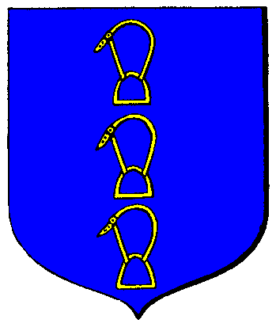

| Übersicht,
Allgemeines |
|
Doofe Karawane
|
| Christoph von Eschenbach (RIP) |
11.04.05 18:33 Konflikt Baby-Drache hat ´nichts´ besiegt!
Wem auch immer diese KAra gehört, könnte er nicht mal einen anderen namen vergeben so zwischen durch, es ist echt langweilig alle paar minuten mit der doofen Kara genervt zu werden in der historie und das schon mehr als 3 Tage lang!!! |
11.04.05 18:36

|
|
| Smoin cónuî Amdîr (RIP) |
*zustimm* |
11.04.05 18:53
|
|
| encalion béliar (RIP) |
Bestimmt die Karawane von Sigi von Hohenstein *g* |
11.04.05 18:58
|
|
| Etienne Artanis (RIP) |
Geht und lest nen Buch.
Ist Euch langweilig?
Echt zum (aus-)lachen. |
11.04.05 19:02
|
|
| Lugenmaul (RIP) |
Und genau betrachtet ist diese Kara ein Exploit.
Denn mit ihr soll offensichtlich der Drache beschäftigt werden um andere Karas sicher ans Ziel kommen zu lassen.
|
11.04.05 19:34
|
|
| Christoph von Eschenbach (RIP) |
das denke ich mir auch, aber trotzdem kann man der kara hin und wieder nen anderen namen geben |
11.04.05 19:47
|
|
| Pendrahil Amlug (RIP) |
Naja, in der Beta gab es einen "sagenumwobenen" Turm, dessen Eigentümer "HdK-Druide" war.
Nun ergab es sich, dass der Turm bei einer Minoburg stand und alle 5 Minuten die Minos dem Turm einen schadenspunkt verpaßten und dies in der History auftauchte. Das waren mal viele Historieneinträge ;-)
Das jetzt alle 30 minuten oder noch weniger mal ein Historieeintrag wiederholt wird ist doch nun wirklich nicht schlimm oder? |
11.04.05 19:52
|
|
| Fáin Cortez (RIP) |
HDK DRUIDE BITTE MELDE DICH!!!!!! :) |
11.04.05 19:59
|
|
| Fáin Cortez (RIP) |
ICH BINS FALO, DEIN ALTER NATCHEF :D |
11.04.05 19:59
|
|
upolein
 |
Ähm...
macht doch mal nen Vorschlag wehrter Christoph von Eschenbach...
Soweit ich das in Erinnerung hab seid Ihr ein echter Experte im umbenennen....
*schmunzelnd das Anschlagbrett verlässt* |
11.04.05 20:27
 |
|
| Athândira Anúldor (RIP) |
upolein, würde man bei Christoph nachfragn, dann erfährt man auch warum die zwei Umbenennungen in Folge...
Aber für alle Doofen:
Das System unterscheidet nicht zwischen Groß/kleinbuchstaben - daher war die Doppelte mit Buchstabe weg und dann Wieder richtig dazu die Einzige Möglichkeit. |
11.04.05 21:07
|
|
| Christoph von Eschenbach (RIP) |
DAnke atha, aber du weisst ja, nicht jeder ist in der lage nach zu fragen :D |
11.04.05 21:08
|
|
upolein
|
Ah^^
Jetzt heißen sie scheinbar ´nix´ und ´wieder nix´...
:-) |
12.04.05 11:36
|
|
| Caelvar Lyní Vréal (RIP) |
dann lieber nur eine mit ´nichts´, an die hat man sich bereits gewöhnt ;D |
12.04.05 11:57
|
|
| Nici (RIP) |
seht das doch mal so:
solange der knuffige drache sich immer wieder über dieses "nichts" und "wieder nichts" hermacht, sind andere karas verschont ;)
nur mal laut gedacht ;P |
12.04.05 12:15
|
|
| Larin Stealtskull (RIP) |
oder jemand möchte ja auch nur diese niedlichen Drachen anlocken um sich dann bei denen zu bedanken ;-) |
12.04.05 21:41
|
|
| Mayandra la Vega (RIP) |
Oder man sieht es als "Drachenwarnung" wenn mal wieder einer in der Gegend ist.
Funktioniert nebenbei auch prima mit Nationskollegen *fg* |
12.04.05 22:30
|
|
| Leroy of Etruria (RIP) |
oha, ein falo... der pöse pöse falo der meine halbling bauern umbringen wollte aber zu schwach war MUHAHA |
14.04.05 9:51
|
|
| Fáin Cortez (RIP) |
naja, dafür hab ich dich dann mit deiner kampftruppe erlegt *eg* |
14.04.05 11:08
|
|
| Leroy of Etruria (RIP) |
nope, soweit ich weiß hast du mir meine halbling bauern weggekillt dann bin ich schnell hinter meinen turm, hab die magier geholt und dann warst du auf einmal weg, ich hab dich als feigling und elenden schuft bezeichnet aber du wolltest ned mehr wieder kommen *grübL* |
14.04.05 11:11
|
|
Übersicht,
Allgemeines
|